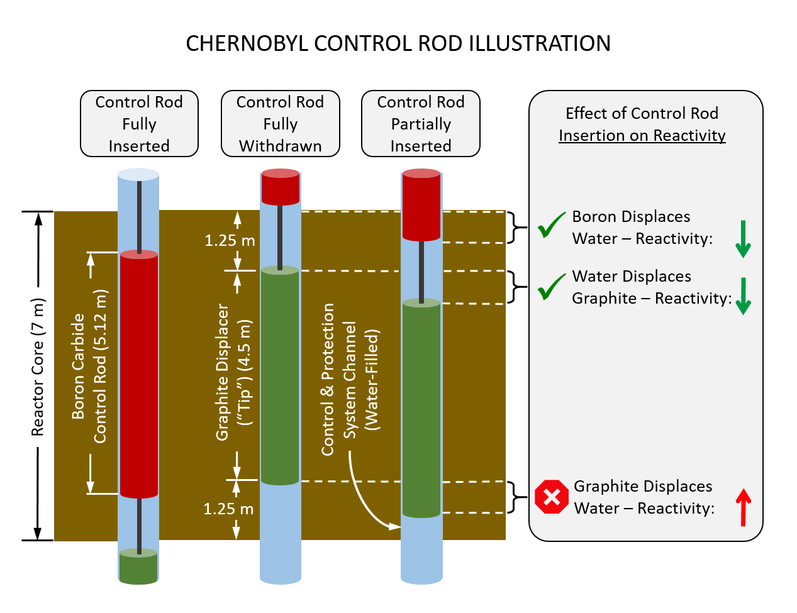

This was
a reenactment done by the HBO show Chernobyl.
(Highly recommend a watch if you haven't seen the show)
(Highly recommend a watch if you haven't seen the show)

A overlook
on the results of the explosion

The problems all started when
the reactor was stalled at 1600MW for 8 hours. This resulted
in a build up of an isotope called Xenon-135. 95% of Xenon-135
is created from Iodine-135 and Iodine-135 is a possible
fission by-product. This is considered a very good neutron
absorber (or poison to the nuclear engineer). Usually the
temperature of the reactor is large enough to stop the
production of this element but since it was running at such
low power for so long, it began to build up.
Moments after the engineers
began slowing the power down to 700MW, for non-concretely
known reasons, the power suddenly dropped to 30 MW. This
caused even more problems in the reactor since Xenon-135 was
still being produced and the water was absorbing even more
neutrons due to there being less steam. Even so, the lead
engineer still wanted to do the test and told the engineers to
pull out a majority of the control rods to get the reactor
power back up. Nonetheless, by pulling out all but about 8
rods that only brought the power up to about 200MW. Dispite
regulations again, they proceeded with the test.
Just
seconds after they shut down the water pumps, reactivity
began to spike. This should be obvious, there was nothing
controlling the rate of reaction, a majority of the control
rods were pulled out, the Xenon-135 burned away quickly from
the rise in power and, due to the positive void coefficient,
the water became a worse neutron absorber by the second.
Their only known solution was to shut down the reactor by
inserting all of the control rods at once, which was their
ultimately downfall.
The
problem was with what really is happening when the control
rods are pulled out. To better control the reactor, when the
rods are pulled out, there is a graphite 'tip' that takes
place of the boron carbide. It's a bit smaller than the
boron and sits centered in the reactor core. By inserting
the control rods, they effectively enhanced the reaction
rate at the bottom of the reactor by displacing the water
and replacing it with graphite. This then led to a severe
spike in energy that, for reasons that are still up for
debate, caused an explosion. The final reading at the plant
was 33 GW but some models predict it may have gone as high
as 330 GW.